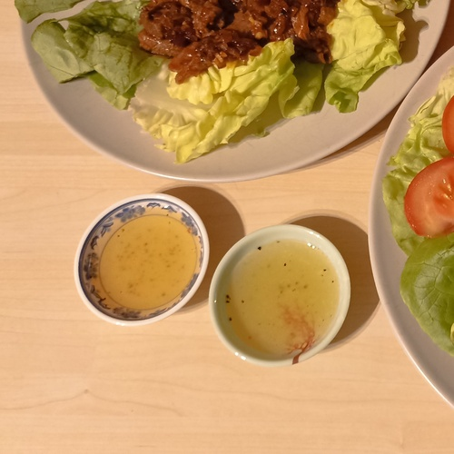

-
Le riz japonais


- Ingrédients pour 2 portions :
- 175g de riz japonais
- Préparation :
- - Bien rincer le riz
- - Le mettre dans une casserole avec un peu plus d'eau que de riz
- - Mettre le feu fort. Une fois que l'eau bout couvrer
- - Faire cuire à feu doux pendant 12 min
- - Remuer de temps en temps pour éviter que le riz accroche la casserole
- - Une fois cuit, l'étaler sur une assiette
La pâte brisée


- Ingrédients :
- 300g de farine
- 150g de beurre pommade
- 1 pincée de sel
- 3 cuillères à soupe de sucre si pâte sucrée
- 70ml d'eau tiède
- Préparation :
- - Mélanger la farine et le sel (et le sucre) dans un saladier
- - Ajouter le beurre et l'incorporer en pétrissant
- - Au bout de 2/3 minutes, on doit obtenir une texture semoule
- - Incorporer rapidement l'eau
- - Emballer la pâte dans du film alimentaire
- - Laisser reposer 20 minutes au frais
La pâte à pizza

- Ingrédients :
- 250g de farine à pizza
- 20g de levure fraîche
- 2 cuillères à soupe d'huile d'olive
- 2 pincées de sel
- 150ml d'eau tiède
- Préparation :
- - Mettre la farine en puit dans un saladier
- - Mettre la levure au centre et rajouter le sel autour du puits
- - Ajouter l'huile d'olive sur autour du puits
- - Mélanger rapidement
- - Ajouter l'eau tiède quart par quart et mélanger
- - Pétrir la pâte à la main afin obtenir une pâte souple et légèrement collante
- - Ajuster avec de la farine ou de l'eau si la pate est plus ou moins collante
- - Faire reposer la pâte au moins 1h dans un saladier recouvert d'un torchon légèrement humide
Les tortillas

- Ingrédients pour 4 tortillas :
- 100g de farine
- 100g de farine de maïs
- 160ml d'eau
- 4 cuillères à soupe d'huile de tournesol
- 1 cuillère à café de sel
- Préparation :
- - Mélanger les farines et le sel dans un saladier
- - Porter l’eau et l’huile à ébullition puis ajouter-les aux farines
- - Mélanger bien et pétrissez pour former une boule de pâte lisse et homogène
- - Couvrir d’un ligne propre et laisser reposer 30 minutes
- - Séparer la pâte et former 4 boules
- - Sur un plan de travail fariné, les étaler en fines galettes
- - Faire chauffer une poêle anti-adhésive sans matière grasse
- - Faire cuire chaque galette 1-2 minutes de chaque côté
- - Déposer la tortilla dans une assiette
- - Recouvrir immédiatement d’une autre assiette pour éviter qu’elle ne se dessèche
La sauce yakiniku

- Ingrédients pour 2 portions :
- 1/4 d'oignon coupé en très petits morceaux
- 1 grosse gousse d'ail
- 3 cuillères à soupe de sauce soja
- 3 cuillères à soupe de mirin
- 1 cuillère à soupe de graines de sésame
- 1,5 cuillère à soupe de sucre
- Préparation :
- - Faire chauffer l'oignon dans une casserole à feu vif
- - Ajouter la sauce soja, le mirin et le sucre
- - Laisser bouillir une minute
- - Hors du feu, ajouter l'ail pressé et les graines de sésame
Les herbes de Provence

- Conseils d'utilisation :
- Ce mélange d'herbes originaires du Sud-Est de la France donne une odeur particulière aux plats.
- Il peut contenir de l'origan, du thym, de la sariette, du romarin, du basilic etc.
- Il est à utiliser en début de préparation ou de cuisson.
- Association :
- - Ce mélange d'herbes est parfait pour assaisonner de la viande
- - Il peut également sublimer une bonne pizza maison
- - Il peut aussi être ajouté à la préparation de certain légume comme les courgettes pour apporter une odeur supplémentaire
La sauce teriyaki
- Ingrédients pour 2 portions :
- 200ml de sauce soja
- 150ml de mirin
- 4 cuillères à soupe de sucre
- Préparation :
- - Mettre tous les ingrédients dans une casserole
- - Faire bouillir puis baisser le feu
- - Laisser réduire pendant 5 minutes en remuant régulièrement
La sauce lok lak
- Ingrédients pour 2 portions :
- 2 cuillères à soupe de jus de citron vert
- 1 cuillère à soupe de sauce nuoc-mâm
- 1 cuillère à soupe d'eau chaude
- 1 cuillère à soupe de sucre
- 1 pincée de poivre noir moulu
- Préparation :
- - Mélanger tous les ingrédients dans un bol
- - Laisser reposer (et c'est tout !)